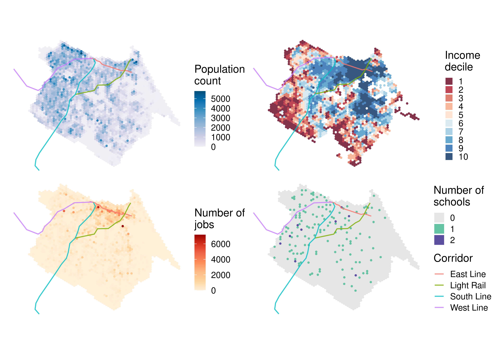
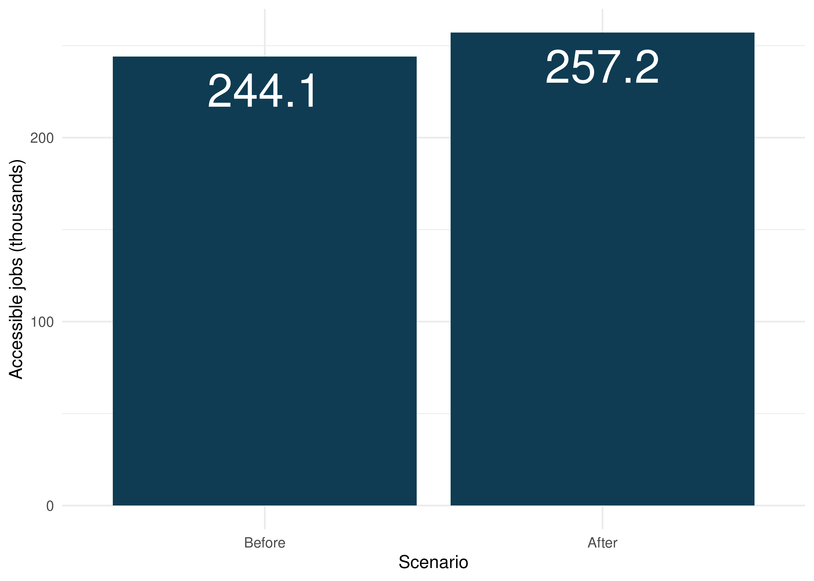
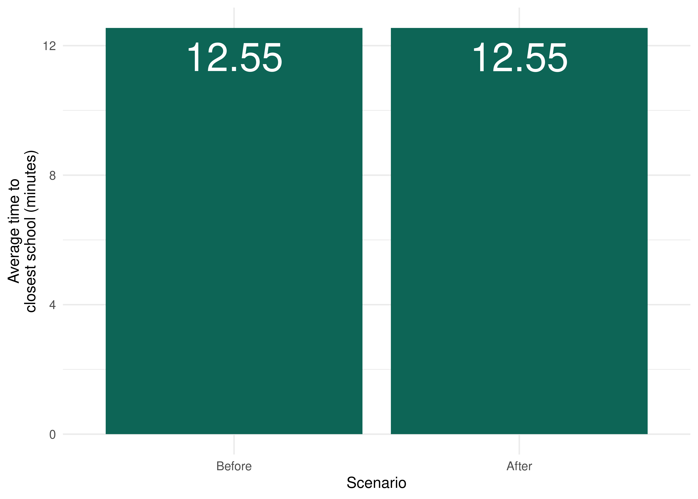
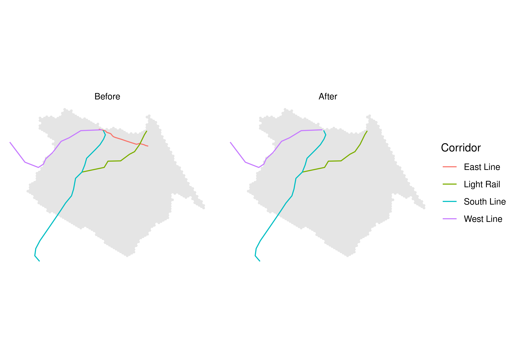
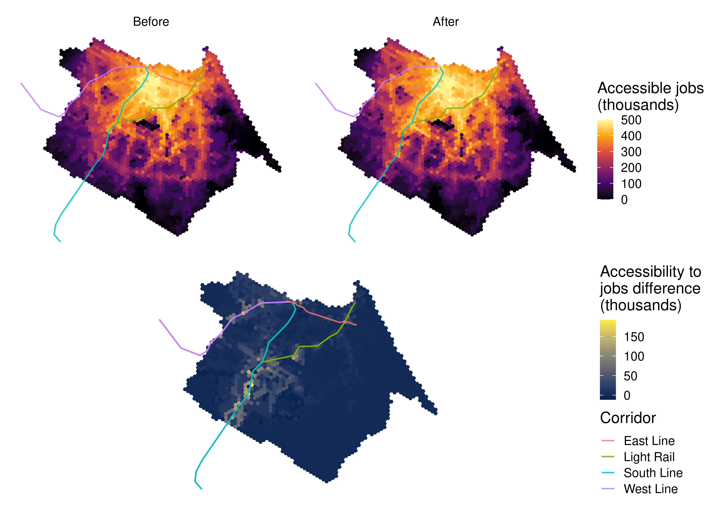
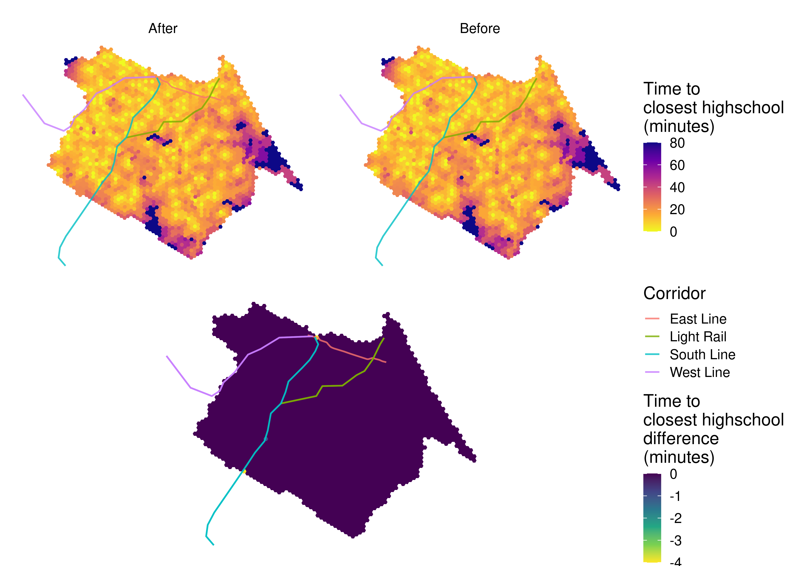
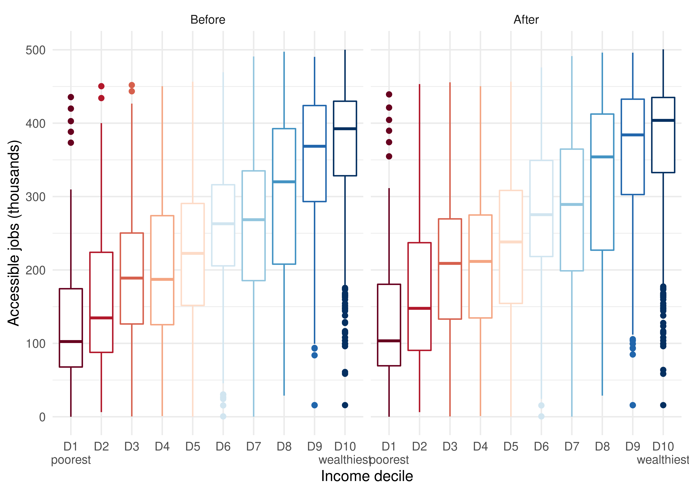
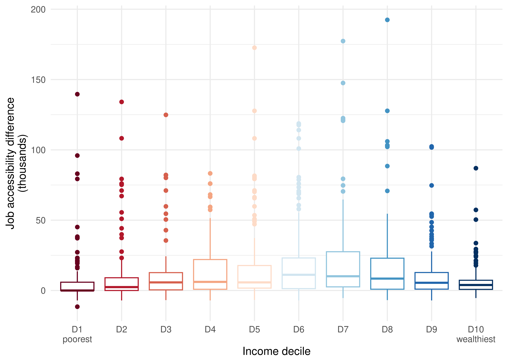
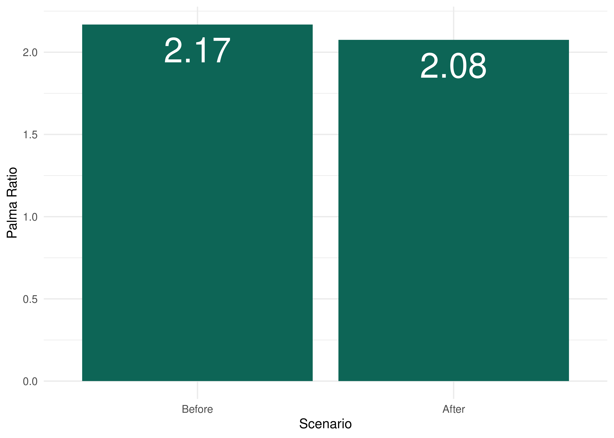

6 Comparing accessibility between two transport scenarios
In this chapter, we will illustrate how to combine the material taught in previous chapters to assess the impact of a transport infrastructure project on urban accessibility conditions. To measure the impact of a transport project, we need to compare the accessibility levels both before and after the project implementation. We need, therefore:
- to use different sets of GTFS feeds and to edit them to represent the scenarios before and after the project implementation;
- to calculate two travel time matrices, one before and one after the project;
- to measure the accessibility levels both before and after the project; and
- to compare the accessibility conditions in both scenarios, looking at how the impacts are distributed both spatially and between socioeconomic groups.
In this chapter, we will look at each one of these steps in detail. First, though, a brief presentation of our case study.
6.1 Case study
As a case study, we will assess Fortaleza’s subway East line project (Figure 6.1). The city of Fortaleza is the capital of Ceará state, located in Northeast Brazil. With an estimated population of 2.7 million inhabitants, Fortaleza is the fifth most populous city in the country.
The East line is one of the biggest recent investments in Fortaleza’s transport system. The corridor extends for 7.3 km and connects the city center to the Papicu neighborhood, connecting the South and West subway lines to the light rail (in portuguese, veículo leve sobre trilhos - VLT) corridor and Papicu’s bus terminal (Figure 6.2). The East line is still under construction as of the publication of this book, so we will be conducting an ex-ante analysis in this chapter - i.e. one in which we assess the future impacts of a project on urban accessibility conditions. This type of analysis differs from ex-post analyses, which are used to assess the impact of projects that have already been implemented.

The scenario analyzed
It’s important to note that East Line’s implementation will also be followed by changes to the frequency of subway’s South and West lines and of Parangaba-Mucuripe light rail, in addition to cuts and adjustments on the municipal bus system, as detailed in Fortaleza’s Sustainable Accessibility Plan (Pasfor)1. For didactic purposes, however, the bus system changes were not incorporated into our analyses in this book. Therefore, the case study showcased in this chapter looks at simplified scenarios, in which only East line’s implementation and the changes to other subway and light rail corridors are considered2.
Figure 6.3 shows that Fortaleza’s population is mainly distributed in the central and western parts of the city, although some relatively high density neighborhoods can also be seen in the southeastern region. Generally, wealthier groups (shown in blue in the income decile distribution map) tend to reside in the expanded city center, extending towards the southeast, while low-income groups (in red) are mainly located in the western and southern peripheries. Most of the formal jobs are distributed along key avenues, with higher concentrations in the city center. In contrast, public highschools are more equally distributed throughout the city.

6.2 GTFS data used in the analysis
In this analysis, we will use the GTFS files made available by Etufor and Metrofor. These feeds describe the public transport network that operated in Fortaleza in October 2019. To access these data, we use the code below, in which we download the feeds using the {httr} package:
metrofor_path <- tempfile("metrofor", fileext = ".zip")
etufor_path <- tempfile("etufor", fileext = ".zip")
# downloads metrofor data
httr::GET(
"https://github.com/ipeaGIT/intro_access_book/releases/download/data_1st_edition/gtfs_for_metrofor_2021-01.zip",
httr::write_disk(metrofor_path)
)# downloads etufor data
httr::GET(
"https://github.com/ipeaGIT/intro_access_book/releases/download/data_1st_edition/gtfs_for_etufor_2019-10.zip",
httr::write_disk(etufor_path)
)To simulate the implementation of subway’s East line, we also need a feed that describes its operation. This feed must contain some key information, such as the shape of the corridor, the stop locations, the travel time between stations and the frequency of trips. In this example, we will use a GTFS file previously created by the Access to Opportunities team for a more detailed assessment of the accessibility impacts caused by this project (Braga et al. 2022). Just like ETUFOR’s and Metrofor’s feeds, this feed has been published in the book GitHub repository and can be downloaded with the code below:
east_line_path <- tempfile("east_line", fileext = ".zip")
httr::GET(
"https://github.com/ipeaGIT/intro_access_book/releases/download/data_1st_edition/gtfs_linha_leste.zip",
httr::write_disk(east_line_path)
)ETUFOR’s and Metrofor’s feeds, however, do not include the changes to the public transport system foreseen in Pasfor. Therefore, we have to edit the feeds using the {gtfstools} package to take these changes into consideration in the post-implementation scenario.
In our case study, we will consider the changes to the frequencies of the subway and light rail services listed in Braga et al. (2022), based on Pasfor: i) an increase in the South line subway frequency from four to ten trips per hour; ii) an increase in the West line subway frequency from two to five trips per hour; and iii) an increase in the Parangaba-Mucuripe light rail frequency from two to eight trips per hour. As we are only considering changes to the subway and light rail services, we only need to edit Metrofor’s GTFS. First, we need to read this feed with read_gtfs() and understand how the trips are described. To do so, we are going to look at how the routes, trips and calendar tables are structured.
library(gtfstools)
metrofor_gtfs <- read_gtfs(metrofor_path)
metrofor_gtfs$routes[, .(route_id, route_long_name)] route_id route_long_name
1: 8 VLT Parangaba Papicu
2: 6 Linha Sul
3: 7 Linha Oestemetrofor_gtfs$trips[, .N, by = .(route_id, direction_id, service_id)] route_id direction_id service_id N
1: 7 0 4 15
2: 7 1 4 15
3: 6 0 4 63
4: 6 1 4 64
5: 8 0 4 29
6: 8 1 4 29metrofor_gtfs$calendar service_id monday tuesday wednesday thursday friday saturday sunday
1: 4 1 1 1 1 1 1 0
start_date end_date
1: 2020-01-01 2021-12-31The feed describes three distinct routes: the two subway corridors and the light rail corridor. Since the feed does not include a frequencies table, each route is described by many trips that depart at different times of the day. There is information for trips in both directions, and they are all associated with the same service that operates on business days and saturdays.
The strategy we are going to adopt to make the necessary changes to the feed include three steps, as follows.
- First, we are going to filter the Metrofor feed to keep only one trip per direction for each route. This trip will tell us the travel time each trip takes between its stops.
- Then, we are going to add a
frequenciestable to the GTFS object, in which we are going to describe the frequency of each trip. - Finally, we are going to “convert” the recently-added
frequenciesentries to timetables described instop_times. This conversion will be used to maintain the original feed’s characteristic of describing trips using only thestop_timestable.
To keep only one trip per direction for each route, we need to filter the feed using filter_by_trip_id(). To do so, we are going to identify the first trip entry per route and per direction and use the function to keep only these trips in the feed.
# identifies the table index in which the first entries per route and per
# direction are located at
index <- metrofor_gtfs$trips[, .I[1], by = .(route_id, direction_id)]$V1
# selects the id of each row
selected_trips <- metrofor_gtfs$trips[index]$trip_id
# filters the gtfs to keep only the trips above
filtered_gtfs <- filter_by_trip_id(metrofor_gtfs, trip_id = selected_trips)
filtered_gtfs$trips trip_id trip_headsign direction_id block_id shape_id service_id route_id
1: 4 Caucaia 0 4 7
2: 19 Moura Brasil 1 4 7
3: 34 Carlito Benevides 0 4 6
4: 96 Chico da Silva 1 4 6
5: 159 Iate 0 4 8
6: 181 Parangaba 1 4 8To facilitate the data manipulation, we are going to change the trip ids, identifying the corridor and the direction in which they operate. We need to make this change both in the trips and in the stop_times tables.
filtered_gtfs$stop_times[
,
trip_id := data.table::fcase(
trip_id == "4", "west_subway_0",
trip_id == "19", "west_subway_1",
trip_id == "34", "south_subway_0",
trip_id == "96", "south_subway_1",
trip_id == "159", "light_rail_0",
trip_id == "181", "light_rail_1"
)
]
filtered_gtfs$trips[
,
trip_id := data.table::fcase(
trip_id == "4", "west_subway_0",
trip_id == "19", "west_subway_1",
trip_id == "34", "south_subway_0",
trip_id == "96", "south_subway_1",
trip_id == "159", "light_rail_0",
trip_id == "181", "light_rail_1"
)
]
filtered_gtfs$trips trip_id trip_headsign direction_id block_id shape_id service_id
1: west_subway_0 Caucaia 0 4
2: west_subway_1 Moura Brasil 1 4
3: south_subway_0 Carlito Benevides 0 4
4: south_subway_1 Chico da Silva 1 4
5: light_rail_0 Iate 0 4
6: light_rail_1 Parangaba 1 4
route_id
1: 7
2: 7
3: 6
4: 6
5: 8
6: 8Now we need to add a frequencies table describing the frequency of each trip. Note, however, that the GTFS specification requires us to list the headway of each trip, and not its frequency. The headway is the inverse of the frequency, so we need to divide the interval of one hour (3,600 seconds) by the frequency of each route (10 trips/hour for the South line, 5 trips/hours for the West line and 8 trips/hours for the light rail). As a result, we have that the headway of the South line, West line and the light rail will be, respectively, 360, 720 and 450 seconds. With the code below, we create a frequencies table using the {tibble} and {data.table} packages.
frequencies <- tibble::tribble(
~trip_id, ~start_time, ~end_time, ~headway_secs, ~exact_times,
"west_subway_0", "06:00:00", "09:00:00", 720L, 1,
"west_subway_1", "06:00:00", "09:00:00", 720L, 1,
"south_subway_0", "06:00:00", "09:00:00", 360L, 1,
"south_subway_1", "06:00:00", "09:00:00", 360L, 1,
"light_rail_0", "06:00:00", "09:00:00", 450L, 1,
"light_rail_1", "06:00:00", "09:00:00", 450L, 1
)
# converts the table to data.table
data.table::setDT(frequencies)
# assigns table to gtfs object
filtered_gtfs$frequencies <- frequenciesTo keep things simple in this case study, we assume that these headways are valid between 6am and 9am. This assumption works in our case because we are only going to calculate the travel time matrix during the morning peak. If we wanted to calculate travel times in other periods of the day or to use this GTFS to examine operation of these corridors throughout the day, however, we would have to list the headways for the rest of the day as well. The value 1 in the exact_times column determines that the trips’ timetables during the specified period must follow the headway exactly, not approximately3.
The GTFS object that results from the modifications done up until this stage can already be used to calculate travel time matrices. However, in order to restore the original feed’s characteristic of not having a frequencies table, we “convert” this table’s entries into timetables described in stop_times. To do so, we use the frequencies_to_stop_times() function. Since all trips in the feed are converted, the frequencies table is removed from the GTFS object.
filtered_gtfs <- frequencies_to_stop_times(filtered_gtfs)
filtered_gtfs$frequenciesNULLTo check if the data manipulation worked as intended, we look at the West line trips that head towards Caucaia (whose direction_id is 0). With a frequency of 5 trips/hour between 6am and 9am, the trips table must contain exactly 16 entries related to this route (5 trips/hour during 3 hours plus a trip starting at 9 am).
west_line_subway <- filtered_gtfs$trips[grepl("west_subway_0", trip_id)]
nrow(west_line_subway)[1] 16west_line_subway$trip_id [1] "west_subway_0_1" "west_subway_0_2" "west_subway_0_3" "west_subway_0_4"
[5] "west_subway_0_5" "west_subway_0_6" "west_subway_0_7" "west_subway_0_8"
[9] "west_subway_0_9" "west_subway_0_10" "west_subway_0_11" "west_subway_0_12"
[13] "west_subway_0_13" "west_subway_0_14" "west_subway_0_15" "west_subway_0_16"The stop_times table, in turn, must list these trips departing every 12 minutes (equivalent to a 450-second headway). Thus, we need to check the first entry of the timetable of each one of the trips listed above.
west_subway_trips <- west_line_subway$trip_id
# identifies above trips' first entries in stop_times
trip_indices <- filtered_gtfs$stop_times[
trip_id %in% west_subway_trips,
.I[1],
by = trip_id
]$V1
filtered_gtfs$stop_times[trip_indices, .(trip_id, departure_time)] trip_id departure_time
1: west_subway_0_1 06:00:00
2: west_subway_0_2 06:12:00
3: west_subway_0_3 06:24:00
4: west_subway_0_4 06:36:00
5: west_subway_0_5 06:48:00
6: west_subway_0_6 07:00:00
7: west_subway_0_7 07:12:00
8: west_subway_0_8 07:24:00
9: west_subway_0_9 07:36:00
10: west_subway_0_10 07:48:00
11: west_subway_0_11 08:00:00
12: west_subway_0_12 08:12:00
13: west_subway_0_13 08:24:00
14: west_subway_0_14 08:36:00
15: west_subway_0_15 08:48:00
16: west_subway_0_16 09:00:00We can see that the “conversion” from frequencies to stop_times worked correctly, allowing us to use this modified feed to calculate the travel time matrix in the post-implementation scenario. To do this, we need to save this GTFS object to disk in .zip format, just like the rest of the feeds we are going to use. We use the write_gtfs() function for that.
modified_metrofor_path <- tempfile("modified_metrofor", fileext = ".zip")
write_gtfs(filtered_gtfs, modified_metrofor_path)Now, we have four distinct GTFS files:
- Etufor’s feed, describing the bus system that operated in October 2019;
- Metrofor’s feed, describing the subway’s (South and West lines) and the light rail’s operation in October 2019;
- Metrofor’s modified feed, describing the South and West subway lines’ and the light rail’s future operation, as foreseen in Pasfor; and
- East line’s feed, describing the future operation of the subway East line.
These four GTFS files will be used to calculate the accessibility conditions in Fortaleza before and after the implementation of the East line. In the pre-implementation scenario, we are going to calculate the travel time matrices using only the October 2019 feeds from Metrofor and Etufor. In the post-implementation scenario, we are going to use Etufor’s feed, Metrofor’s modified feed with updated frequencies and the feed of the new East line.
6.3 Calculating the travel time matrices
After making the necessary changes to the GTFS files and defining which feeds we are going to use in each scenario, we need to calculate the travel time matrices that we are going to use to estimate the accessibility levels. To do this, we are going to use the travel_time_matrix() function from {r5r}, previously presented in Chapter 3.
Before calculating the travel matrices, however, we need to organize our data as required by {r5r}. With the code below, we create a separate directory for each scenario (before and after implementation) in which we save the files used in the routing process:
# creates root analysis directory
analysis_dir <- "impact_analysis"
dir.create(analysis_dir)
# creates scenarios directories
before_dir <- file.path(analysis_dir, "before")
after_dir <- file.path(analysis_dir, "after")
dir.create(before_dir)
dir.create(after_dir)
# copy relevant files to "before" scenario directory
file.copy(from = etufor_path, to = file.path(before_dir, "etufor.zip"))
file.copy(from = metrofor_path, to = file.path(before_dir, "metrofor.zip"))
# copy relevant files to "after" scenario directory
file.copy(from = etufor_path, to = file.path(after_dir, "etufor.zip"))
file.copy(
from = modified_metrofor_path,
to = file.path(after_dir, "modified_metrofor.zip")
)
file.copy(
from = east_line_path,
to = file.path(after_dir, "east_line.zip")
)
# visualizes file structure
fs::dir_tree(analysis_dir)impact_analysis
├── after
│ ├── east_line.zip
│ ├── etufor.zip
│ └── modified_metrofor.zip
└── before
├── etufor.zip
└── metrofor.zipTo estimate the travel times in our study area, we also need a file representing the local street network extracted from OSM in .pbf format. Optionally, we are also going to use a file representing the local topography, in .tif format. These data sets, just like the GTFS files, can be downloaded from the book repository. Assuming that the implementation of East line will not affect the street network, the pedestrian infrastructure and the topography in the region, we can use the same files to calculate both travel time matrices. With the code below, we download these data sets and copy the files to both scenarios’ directories.
# crates temporary files to save data
pbf_path <- tempfile("street_network", fileext = ".osm.pbf")
tif_path <- tempfile("topography", fileext = ".tif")
# downloads OSM data
httr::GET(
"https://github.com/ipeaGIT/intro_access_book/releases/download/data_1st_edition/fortaleza.osm.pbf",
httr::write_disk(pbf_path)
)# downloads topography data
httr::GET(
"https://github.com/ipeaGIT/intro_access_book/releases/download/data_1st_edition/topografia3_for.tif",
httr::write_disk(tif_path)
)# copies files to both scenarios' directories
file.copy(from = pbf_path, to = file.path(before_dir, "street_network.osm.pbf"))
file.copy(from = pbf_path, to = file.path(after_dir, "street_network.osm.pbf"))
file.copy(from = tif_path, to = file.path(before_dir, "topography.tif"))
file.copy(from = tif_path, to = file.path(after_dir, "topography.tif"))fs::dir_tree(analysis_dir)impact_analysis
├── after
│ ├── east_line.zip
│ ├── etufor.zip
│ ├── modified_metrofor.zip
│ ├── street_network.osm.pbf
│ └── topography.tif
└── before
├── etufor.zip
├── metrofor.zip
├── street_network.osm.pbf
└── topography.tifWith the data properly organized, we can now start calculating the travel time matrices. The first step is to use the street network, public transport and topography data to build the transport network used by {r5r} in the routing process. To do this, we use the setup_r5() function, which also returns a connection to R5. With the code below, we build two networks, one for each scenario:
# allocates memory to be used by Java Virtual Machine
options(java.parameters = "-Xmx4G")
library(r5r)
r5r_core_before <- setup_r5(before_dir, verbose = FALSE)
r5r_core_after <- setup_r5(after_dir, verbose = FALSE)Having built the transport networks, we can now proceed to the actual travel time matrices calculation. In this step, we are going to use the centroids of a hexagonal grid covering Fortaleza as our origins and destinations. We are going to use the hexagonal grid made available by {aopdata}4. Each grid hexagon covers an area of 0.11 km², similar to a city block, which produces results at a fine spatial resolution.
For a proper comparison between both scenarios, we need to calculate the two travel matrices using the same parameters. We consider trips by foot or by public transport, allow walking trips of at most 30 minutes to access or egress from public transport stops and limit the maximum trip duration to 60 minutes. We also consider a departure time of 7am, during the morning peak of a typical monday:
# downloads spatial grid data
fortaleza_grid <- aopdata::read_grid("Fortaleza")
# gets cells' centroids
points <- sf::st_centroid(fortaleza_grid)
# renames the column holding the cell ids
names(points)[1] <- "id"
# calculates the "before" scenario travel time matrix
ttm_before <- travel_time_matrix(
r5r_core_before,
origins = points,
destinations = points,
mode = c("WALK", "TRANSIT"),
departure_datetime = as.POSIXct(
"02-03-2020 07:00:00",
format = "%d-%m-%Y %H:%M:%S"
),
max_walk_time = 30,
max_trip_duration = 60,
verbose = FALSE,
progress = FALSE
)
# calculates the "after" scenario travel time matrix
ttm_after <- travel_time_matrix(
r5r_core_after,
origins = points,
destinations = points,
mode = c("WALK", "TRANSIT"),
departure_datetime = as.POSIXct(
"02-03-2020 07:00:00",
format = "%d-%m-%Y %H:%M:%S"
),
max_walk_time = 30,
max_trip_duration = 60,
verbose = FALSE,
progress = FALSE
)
head(ttm_before) from_id to_id travel_time_p50
1: 89801040323ffff 89801040323ffff 2
2: 89801040323ffff 89801040327ffff 22
3: 89801040323ffff 8980104032bffff 23
4: 89801040323ffff 8980104032fffff 15
5: 89801040323ffff 89801040333ffff 10
6: 89801040323ffff 89801040337ffff 19head(ttm_after) from_id to_id travel_time_p50
1: 89801040323ffff 89801040323ffff 2
2: 89801040323ffff 89801040327ffff 22
3: 89801040323ffff 8980104032bffff 23
4: 89801040323ffff 8980104032fffff 15
5: 89801040323ffff 89801040333ffff 10
6: 89801040323ffff 89801040337ffff 19At first sight, our matrices look exactly the same: all travel times shown in the samples above are identical. This happens because the subway expansion project is limited to a relatively small area near Fortaleza’s city center, and the changes to the frequencies of the other subway and light rail corridors mainly affect these corridors’ immediate surroundings. Thus, many trips that take place in the city are not affected by these transport interventions. However, the travel time between many origin-destination pairs are, in fact, impacted:
# joins both scenarios' travel times in the same data set
comparison <- merge(
ttm_before,
ttm_after,
by = c("from_id", "to_id"),
suffixes = c("_before", "_after")
)
# shows the OD pairs whose travel times got faster
comparison[travel_time_p50_before < travel_time_p50_after] from_id to_id travel_time_p50_before
1: 8980104096fffff 8980104e803ffff 48
2: 8980104096fffff 8980104e807ffff 57
3: 8980104096fffff 8980104e80bffff 53
4: 8980104096fffff 8980104e80fffff 55
5: 8980104096fffff 8980104e863ffff 56
---
12974: 8980104eecbffff 8980104ea5bffff 52
12975: 8980104eecbffff 8980104eac3ffff 49
12976: 8980104eecbffff 8980104ead3ffff 44
12977: 8980104eecbffff 8980104eadbffff 49
12978: 8980104eecbffff 8980104ee6bffff 41
travel_time_p50_after
1: 50
2: 59
3: 55
4: 57
5: 57
---
12974: 57
12975: 53
12976: 47
12977: 50
12978: 426.4 Calculating accessibility levels in both scenarios
Calculating the accessibility levels in both scenarios is really simple, requiring only some basic data processing before we apply one of the functions from the {accessibility} package. To facilitate the data manipulation, we merge the travel time matrices of both scenarios into a single table and identify each scenario with a column named scenario:
ttm <- rbind(ttm_before, ttm_after, idcol = "scenario")
ttm[, scenario := factor(scenario, labels = c("before", "after"))]
ttm scenario from_id to_id travel_time_p50
1: before 89801040323ffff 89801040323ffff 2
2: before 89801040323ffff 89801040327ffff 22
3: before 89801040323ffff 8980104032bffff 23
4: before 89801040323ffff 8980104032fffff 15
5: before 89801040323ffff 89801040333ffff 10
---
3739271: after 8980107b6dbffff 8980107b6cbffff 9
3739272: after 8980107b6dbffff 8980107b6cfffff 15
3739273: after 8980107b6dbffff 8980107b6d3ffff 9
3739274: after 8980107b6dbffff 8980107b6d7ffff 15
3739275: after 8980107b6dbffff 8980107b6dbffff 0To calculate the accessibility levels, we need a table with some land used data for Fortaleza. We can download such data using the read_landuse() function from the {aopdata} package, which returns a table containing the population and opportunities count in each one of the hexagons that compose the previously downloaded spatial grid.
fortaleza_data <- aopdata::read_landuse(
"Fortaleza",
showProgress = FALSE
)For demonstration purposes, we calculate the accessibility to jobs and public highschools in our study area. The information on the total number of jobs and public highschools in each hexagon is listed in the columns T001 and E004, respectively. We rename them to facilitate their identification. We also keep in the land use dataset only the columns that we are going to use later, including the columns P001, which lists the total population in each hexagon, and R003, which contains the income decile classification of each hexagon:
cols_to_keep <- c("id", "jobs", "schools", "population", "decile")
data.table::setnames(
fortaleza_data,
old = c("id_hex", "T001", "E004", "P001", "R003"),
new = cols_to_keep
)
# deletes the columns that won't be used
fortaleza_data[, setdiff(names(fortaleza_data), cols_to_keep) := NULL]
fortaleza_data id population decile jobs schools
1: 89801040323ffff 30 1 0 0
2: 89801040327ffff 318 1 7 0
3: 8980104032bffff 0 NA 0 0
4: 8980104032fffff 103 1 98 0
5: 89801040333ffff 43 1 0 0
---
2558: 8980107b6cbffff 2575 4 124 0
2559: 8980107b6cfffff 2997 3 4 0
2560: 8980107b6d3ffff 1751 8 14 0
2561: 8980107b6d7ffff 2032 4 134 0
2562: 8980107b6dbffff 1896 9 193 0A key decision in any accessibility analysis is which accessibility measure to use. It’s extremely important to weigh the pros and cons of each measure and to comprehend which metrics are more adequate for the type of opportunities we are looking at. In this example, we use two distinct measures.
To calculate accessibility to jobs, we use a cumulative opportunities measure. This metric allows us to understand how many jobs are accessible within a given time frame. Despite its limitations discussed in Chapter 2, this is one of the most commonly used accessibility metrics. This is to a large extent because the results from this accessibility indicator are extremely easy to communicate and interpret. In this example, we set a travel time threshold of 60 minutes, which is close to average commuting time by public transport in Fortaleza (approximately 58 minutes, according to Pasfor).
To calculate accessibility to public highschools, we use a minimum travel cost measure. This metric is particularly useful to assess the coverage of essential public services, such as basic health and education facilities. We can use this measure, for example, to identify population groups that are further from these opportunities than a time/distance limit deemed reasonable.
As previously shown in Chapter 3, we can calculate this measures using the cumulative_cutoff() and cost_to_closest() functions, respectively, from the {accessibility} package:
library(accessibility)
access_to_jobs <- cumulative_cutoff(
ttm,
land_use_data = fortaleza_data,
opportunity = "jobs",
travel_cost = "travel_time_p50",
cutoff = 60,
group_by = "scenario"
)
access_to_jobs id scenario jobs
1: 89801040323ffff before 48271
2: 89801040327ffff before 26918
3: 8980104032bffff before 48271
4: 8980104032fffff before 69550
5: 89801040333ffff before 26918
---
5120: 8980107b6cbffff after 379488
5121: 8980107b6cfffff after 285899
5122: 8980107b6d3ffff after 347678
5123: 8980107b6d7ffff after 359536
5124: 8980107b6dbffff after 373652time_to_schools <- cost_to_closest(
ttm,
land_use_data = fortaleza_data,
opportunity = "schools",
travel_cost = "travel_time_p50",
group_by = "scenario"
)
time_to_schools id scenario travel_time_p50
1: 89801040323ffff before 28
2: 89801040323ffff after 28
3: 89801040327ffff before 37
4: 89801040327ffff after 37
5: 8980104032bffff before 28
---
5120: 8980107b6d3ffff after 18
5121: 8980107b6d7ffff before 14
5122: 8980107b6d7ffff after 14
5123: 8980107b6dbffff before 15
5124: 8980107b6dbffff after 15We can see that the minimum travel cost function output includes some Inf values, which are used to signal origins that cannot reach any opportunities given the trips that compose the travel time matrix. In our case, origins listed with this value cannot reach any public highschools within 60 minutes of travel (which is the travel time limit imposed when calculating the matrix). To simplify the process from this point onward, we consider that these regions are 80 minutes away from their nearest school:
# substitutes Inf values by 80 minutes
time_to_schools[
,
travel_time_p50 := ifelse(is.infinite(travel_time_p50), 80, travel_time_p50)
]Having done that, we can calculate the accessibility difference between the two scenarios with the code below. This information is useful to clearly communicate how the accessibility conditions in the city would be impacted by the future implementation of the East subway line and the frequency changes foreseen in Pasfor.
access_to_jobs[
,
difference := data.table::shift(jobs, type = "lead") - jobs,
by = id
]
time_to_schools[
,
difference := data.table::shift(travel_time_p50, type = "lead") -
travel_time_p50,
by = id
]6.5 Analyzing accessibility levels
Now that we have calculated the accessibility levels in both scenarios and the difference between them, we can examine how the future implementation of the East line coupled with the changes to the frequencies of the subway and light rail services will impact the accessibility conditions in our study area. As a first exploratory analysis, we can investigate how these changes affect the average accessibility in the city. Looking at the accessibility to jobs first, we calculate the average number of accessible jobs in each scenario. Here, it’s important to weigh the accessibility levels by the population of each grid cell, as hexagons with larger populations contribute more to the city’s average than hexagons with fewer residents.
library(ggplot2)
library(patchwork)
# merges accessibility table with land use data (population count and income
# decile)
access_to_jobs <- merge(
access_to_jobs,
fortaleza_data,
by = "id"
)
# renames columns with duplicated names
data.table::setnames(
access_to_jobs,
old = c("jobs.x", "jobs.y"),
new = c("access_to_jobs", "job_count")
)
# calculates avg accessibility in each scenario
avg_access <- access_to_jobs[
,
.(access = weighted.mean(access_to_jobs, w = as.numeric(population))),
by = scenario
]
ggplot(data = avg_access, aes(x = scenario, y = access / 1000)) +
geom_col(fill = "#0f3c53") +
geom_text(
aes(label = round(access / 1000, digits = 1)),
vjust = 1.5,
color = "white",
size = 10
) +
ylab("Accessible jobs (thousands)") +
scale_x_discrete(name = "Scenario", labels = c("Before", "After")) +
theme_minimal()
The results show that Fortaleza’s population could reach on average 244,137 jobs by public transport in up to 60 minutes before the subway expansion, in 2019. The East line’s implementation and the changes to the frequencies of subway and light rail services will result in an increase of 5.3%, to 257,177 jobs on average.
When we look at the average time to reach the closest public highschool, we see that the changes to the transport system barely affect the accessibility to these schools. On average, Fortaleza’s population would take approximately 13 minutes to reach the nearest public highschool to their home in 2019. After the subway extension and the increase to the subway and light rail frequencies, this value will remain virtually unchanged.
# merges time to schools table with land use data
time_to_schools <- merge(
time_to_schools,
fortaleza_data,
by = "id"
)
# calculates avg time to schools in each scenario
avg_time <- time_to_schools[
,
.(time = weighted.mean(travel_time_p50, w = as.numeric(population))),
by = scenario
]
ggplot(data = avg_time, aes(x = scenario, y = time)) +
geom_col(fill = "#0d6556") +
geom_text(
aes(label = round(time, digits = 2)),
vjust = 1.5,
color = "white",
size = 10
) +
ylab("Average time to\nclosest school (minutes)") +
scale_x_discrete(name = "Scenario", labels = c("Before", "After")) +
theme_minimal()
In summary, the results show that the planned construction of the East line and the frequency adjustment of the other rail services in Fortaleza will affect accessibility to jobs much more significantly than the accessibility to public highschools. This is mainly a result of how these two types of opportunities are spatially distributed in Fortaleza: while jobs are much more concentrated in the city center, schools are better distributed throughout the city. The changes to the public transport system, therefore, could help the residents of regions far from the city center reach the jobs located there. On the other hand, public highschools are much more evenly distributed across the city, which results in relatively good accessibility conditions even before the changes to the public transport network. This helps us explain why the transport interventions will have such a low impact on the travel time necessary to reach the nearest schools.
These results can be more deeply understood when we observe their spatial distribution. Before doing so, however, we create a spatial object outlining the shapes of the public transport corridors in the city, which will help making the impact of the changes to the transport network even clearer.
# reads the gtfs files required to create the geometries of each corridor
metrofor_gtfs <- read_gtfs(metrofor_path)
east_line_gtfs <- read_gtfs(east_line_path)
# metrofor's gtfs does not contain a shapes table, se we have to create the
# geometries from the stops and stop_times tables with get_trip_geometry()
corridors_trips <- c("4", "34", "159")
# the stop sequence from one of the trips is not properly order, so we have to
# manually order them
metrofor_gtfs$stop_times <- metrofor_gtfs$stop_times[
order(trip_id, stop_sequence)
]
metrofor_shape <- gtfstools::get_trip_geometry(
metrofor_gtfs,
trip_id = corridors_trips
)
# converts the east line shape in one of the directions to spatial geometry
east_line_shape <- gtfstools::convert_shapes_to_sf(
east_line_gtfs,
shape_id = "LL_0"
)
# names each route and bind the two tables together
east_line_shape$corridor <- "East Line"
metrofor_shape$corridor <- data.table::fcase(
metrofor_shape$trip_id == 4, "West Line",
metrofor_shape$trip_id == 34, "South Line",
metrofor_shape$trip_id == 159, "Light Rail"
)
metrofor_shape$origin_file <- NULL
metrofor_shape$trip_id <- NULL
east_line_shape$shape_id <- NULL
corridors_shapes <- rbind(metrofor_shape, east_line_shape)
# duplicates the table, adds a column identifying each scenario and removes
# east line from the pre-implementation scenario
corridors_shapes <- rbind(corridors_shapes, corridors_shapes)
corridors_shapes$scenario <- rep(c("before", "after"), each = 4)
corridors_shapes <- subset(
corridors_shapes,
corridor != "East Line" | scenario != "before"
)
corridors_shapes$scenario <- factor(
corridors_shapes$scenario,
labels = c("before", "after")
)
ggplot() +
geom_sf(data = fortaleza_grid, fill = "gray90", color = NA) +
geom_sf(data = corridors_shapes, aes(color = corridor)) +
scale_color_manual(
name = "Corridor",
values = c("#F8766D", "#7CAE00", "#00BFC4", "#C77CFF")
) +
facet_wrap(
~ scenario,
nrow = 1,
labeller = as_labeller(c(before = "Before", after = "After"))
) +
theme_void()
Now we can analyze the spatial distribution of accessibility levels in both scenarios, as well as the accessibility difference between them. To do this, we need to merge the accessibility estimates with the spatial grid of our study area. We first look at access to jobs:
# merges accessibility data with fortaleza's spatial grid and convert the result into a
# spatial object
access_to_jobs <- merge(
access_to_jobs,
fortaleza_grid,
by.x = "id",
by.y = "id_hex"
)
access_to_jobs_sf <- sf::st_sf(access_to_jobs)
# configures access distribution maps in both scenarios
access_dist <- ggplot() +
geom_sf(
data = access_to_jobs_sf,
aes(fill = access_to_jobs),
color = NA
) +
facet_wrap(
~ scenario,
nrow = 1,
labeller = as_labeller(c(before = "Before", after = "After"))
) +
scale_fill_viridis_c(
option = "inferno",
label = scales::label_number(scale = 1 / 1000)
) +
labs(fill = "Accessible jobs\n(thousands)", color = "Corridor") +
geom_sf(
data = corridors_shapes,
aes(color = corridor),
alpha = 0.8,
show.legend = FALSE
) +
scale_color_manual(values = c("#F8766D", "#7CAE00", "#00BFC4", "#C77CFF")) +
theme_void() +
theme(legend.key.size = unit(0.4, "cm"))
# configures difference map
difference_dist <- ggplot() +
geom_sf(
data = subset(access_to_jobs_sf, !is.na(difference)),
aes(fill = difference),
color = NA
) +
scale_fill_viridis_c(
option = "cividis",
label = scales::label_number(scale = 1 / 1000)
) +
labs(
fill = "Accessibility to\njobs difference\n(thousands)",
color = "Corridor"
) +
geom_sf(data = corridors_shapes, aes(color = corridor), alpha = 0.8) +
scale_color_manual(values = c("#F8766D", "#7CAE00", "#00BFC4", "#C77CFF")) +
theme_void() +
theme(legend.key.size = unit(0.4, "cm"))
# combines both plots
access_dist / difference_dist + plot_layout(ncol = 1, heights = c(1, 1))
The map shows that the regions that will benefit the most from the changes to the transport system are those distant from the city center, but which are still close to rapid transit stations. The job accessibility gains concentrate mainly around the South and West subway corridors, and, to a smaller extent, around some of the light rail stations. Even regions close to these corridors, although not immediately adjacent to them, display large accessibility gains, highlighting the importance of the transport network connectivity to guarantee good accessibility conditions. The region around the new East line, on the other hand, which already concentrated some of the highest accessibility levels in the city even before the implementation of the new corridor, shows only modest accessibility gains.
The maps of travel time to the nearest school, however, depict a different story.
# merges time to schools data with Fortaleza's spatial grid and converts the result
# into a spatial object
time_to_schools <- merge(
time_to_schools,
fortaleza_grid,
by.x = "id",
by.y = "id_hex"
)
time_to_schools_sf <- sf::st_sf(time_to_schools)
# configures time to schools distribution maps in both scenarios
time_dist <- ggplot() +
geom_sf(data = time_to_schools_sf, aes(fill = travel_time_p50), color = NA) +
facet_wrap(
~ scenario,
nrow = 1,
labeller = as_labeller(c(before = "Before", after = "After"))
) +
scale_fill_viridis_c(option = "plasma", direction = -1) +
labs(fill = "Time to\nclosest highschool\n(minutes)", color = "Corridor") +
geom_sf(
data = corridors_shapes,
aes(color = corridor),
alpha = 0.8,
show.legend = FALSE
) +
scale_color_manual(values = c("#F8766D", "#7CAE00", "#00BFC4", "#C77CFF")) +
theme_void() +
theme(legend.key.size = unit(0.4, "cm"))
# configures difference map
time_diff_dist <- ggplot() +
geom_sf(
data = subset(time_to_schools_sf, !is.na(difference)),
aes(fill = difference),
color = NA
) +
scale_fill_viridis_c(option = "viridis", direction = -1) +
labs(
fill = "Time to\nclosest highschool\ndifference (minutes)",
color = "Corridor"
) +
geom_sf(data = corridors_shapes, aes(color = corridor), alpha = 0.8) +
scale_color_manual(values = c("#F8766D", "#7CAE00", "#00BFC4", "#C77CFF")) +
theme_void() +
theme(legend.key.size = unit(0.4, "cm"))
# combines both plots
time_dist / time_diff_dist + plot_layout(ncol = 1, heights = c(1, 1))
The East line and the changes to the subway and light rail frequencies barely affect the accessibility to public highschools in Fortaleza. Very few hexagons present any accessibility gain between scenarios, with the exception of a small number of grid cells very close to subway stations. As we can see, the accessibility to schools is much more evenly distributed than the accessibility to jobs. Again, this is a consequence of how public highschools are distributed in the city: unlike the jobs distribution, which tends to follow economic criteria, the spatial planning of public schools in Brazil is guided by equity guidelines, aiming to increase the proximity between schools and vulnerable population groups. Nonetheless, the degree to which education policies successfully promote equitable accessibility greatly varies between cities and education levels (Saraiva et al. 2023).
6.6 Accessibility inequality
A key dimension when assessing transport policies is related to their distributive aspects. Who are the winners and losers? From an equity perspective, we expect public policies to prioritize improvements on the accessibility conditions of those with worse socioeconomic conditions and who depend on public transport the most (Pereira, Schwanen, and Banister 2017; van Wee 2022).
In this section, we look at how the job accessibility gains that result from the East line implementation coupled with the changes to subway and light rail frequencies are distributed between different income groups. To do this, we need to understand how the accessibility levels were distributed among the population in 2019, before the transport intervention, and how they will be after the implementation of such changes. With the code below, we use the classification of each hexagon in terms of income decile to investigate the accessibility distribution between income groups before and after the changes to the transport system.
ggplot(data = access_to_jobs[population > 0]) +
geom_boxplot(
aes(
x = as.factor(decile),
y = access_to_jobs / 1000,
color = as.factor(decile),
weight = population,
group = decile
),
show.legend = FALSE
) +
facet_wrap(
~ scenario,
nrow = 1,
labeller = as_labeller(c(before = "Before", after = "After"))
) +
scale_colour_brewer(palette = "RdBu") +
labs(x = "Income decile", y = "Accessible jobs (thousands)") +
scale_x_discrete(
labels = c("D1\npoorest", paste0("D", 2:9), "D10\nwealthiest")
) +
theme_minimal()
This figure clearly shows that the wealthiest people in Fortaleza have higher job accessibility than their poorer counterparts, both before and after the changes to the transport system. In Fortaleza, as in most Brazilian cities, the wealthiest populations tend to live closer to the city center and areas with higher concentration of jobs, whereas the poorest tend to reside in the city’s outskirts (Pereira et al. 2022). Consequently, the wealthiest usually have better urban accessibility conditions than the poorest. Not only because they tend to live closer to their jobs, but also because these regions tend to be better served by public transport than the urban peripheries.
However, it is difficult to see in this figure the magnitude of the variation in accessibility between the two scenarios. Using the same strategy that we have previously used, we present in the following figure the distribution of accessibility gains between scenarios by income decile:
ggplot(subset(access_to_jobs, population > 0 & !is.na(difference))) +
geom_boxplot(
aes(
x = as.factor(decile),
y = difference / 1000,
color = as.factor(decile),
weight = population,
group = decile
),
show.legend = FALSE
) +
scale_colour_brewer(palette = "RdBu") +
labs(
x = "Income decile",
y = "Job accessibility difference\n(thousands)"
) +
scale_x_discrete(
labels = c("D1\npoorest", paste0("D", 2:9), "D10\nwealthiest")
) +
theme_minimal()
As we can see, the distribution of accessibility gains follows an inverted-U shape, with middle-income groups concentrating larger gains than the poorest and wealthiest populations. The hexagon that gained the most accessibility appears as an outlier of the 8th decile category, with an accessibility excess between scenarios of almost 200,000 jobs.
Charts such as the ones shown in the last two figures contain lots of information, and that’s why they are not the simplest to communicate. To facilitate this communication, summary measures are frequently used to assess the impact of transport policies on accessibility inequalities. This type of measure tries to summarize the distribution of accessibility levels among population groups (here, income deciles) into a single indicator that facilitates the understanding and interpretation of the results and is frequently used, for example, when developing plans and setting goals. In the accessibility literature, two of the most frequently used inequality measures are the Palma Ratio and the Gini Index (Lucas, van Wee, and Maat 2016; Guzman and Oviedo 2018; Pritchard et al. 2019).
In this example, we calculate the Palma Ratio before and after the interventions to the transport system. This measure is the result of dividing the average accessibility of the wealthiest 10% by the average accessibility of the poorest 40%:
\[P = \frac{\overline{A_{tp10}}}{\overline{A_{bt40}}}\]
in which \(P\) is the Palma Ratio, \(\overline{A_{tp10}}\) is the average accessibility of the richest 10% and \(\overline{A_{bt40}}\) is the average accessibility of the poorest 40%.
Why use the Palma Ratio?
One of the main advantages of the Palma Ratio over the Gini Index is how easy it is to communicate and interpret its results. Values higher than 1 indicate a scenario in which the wealthiest have higher average accessibility levels than the poorest, and values lower than 1 the opposite situation. Another advantage of the Palma Ratio is that it clearly reflects how the inequality varies between two groups of particular interest to us: the most privileged and the most vulnerable in a population. The Gini Index, on the other hand, estimates how much a distribution deviates from a hypothetical situation in which everyone has the exact same access level, but says nothing about the socioeconomic conditions of those with the highest and lowest accessibility levels. If a given policy increases the accessibility levels of wealthy people that live in low-accessibility regions, for example, the Gini Index would point to an inequality decrease, even if not a single vulnerable citizen had benefited from this policy. Such a policy can hardly be assessed as equitable, even if the summary measure (the Gini Index, in this case) suggests otherwise.
Calculating the Palma Ratio before and after the East line implementation and the changes to the subway and light rail frequencies allows us to understand how these policies will impact the job accessibility inequality in Fortaleza:
# calculates the wealthiest's average accessibility in both scenarios
wealthiest_access <- access_to_jobs[
decile == 10,
.(access = weighted.mean(access_to_jobs, w = as.numeric(population))),
by = scenario
]
# calculates the poorest's average accessibility in both scenarios
poorest_access <- access_to_jobs[
decile %in% 1:4,
.(access = weighted.mean(access_to_jobs, w = as.numeric(population))),
by = scenario
]
# combines the wealthiest's and the poorest's accessibility
palma_ratio <- merge(
wealthiest_access,
poorest_access,
by = "scenario",
suffixes = c("_wealthiest", "_poorest")
)
# calculates the palma ratio
palma_ratio[, palma := access_wealthiest / access_poorest]
ggplot(data = palma_ratio, aes(x = scenario, y = palma)) +
geom_col(fill = "#0d6556") +
geom_text(
aes(label = round(palma, digits = 2)),
vjust = 1.5,
color = "white",
size = 10
) +
ylab("Palma Ratio") +
scale_x_discrete(name = "Scenario", labels = c("Before", "After")) +
theme_minimal()
The figure above shows that, in 2019, the wealthiest groups in Fortaleza could access, on average, 2.17 times more jobs by public transport in 60 minutes than the poorest population. The chart also shows that the inequality, as measured by the Palma Ratio, slightly decreased between the pre- and post-intervention scenarios. Thus, we can say that, in this simplified case study, the proposed subway expansion combined with the changes to the subway and light rail frequencies will be slightly progressive. In other words, these interventions will reduce the job accessibility inequality between high- and low-income populations in Fortaleza.
It’s important to emphasize that the project assessment presented in this chapter looks at a simplified intervention scenario for didactic purposes. For a more complete assessment of the East Line implementation and the changes foreseen in Pasfor, which also includes changes to the bus network, please see Braga et al. (2022) (in Portuguese).
In this chapter, we have focused on assessing the accessibility impacts of a transport policy. It’s worth noting, however, that a complete assessment of a public policy must also consider other criteria, such as community engagement with the policy development and decision-making process, as well as other environmental, economic and social impacts of the policy. Although an accessibility impact assessment is very important to determine who benefits from the transport policy and how such policy impacts the performance of the transport network, this type of analysis only looks at a single impact dimension, and should be complemented by other analyses.
Available at https://www.pasfor.com.br/.↩︎
For a more complete assessment that considers all the changes foreseen in Pasfor, please check Braga et al. (2022) (in Portuguese).↩︎
For more details, please refer to the
frequenciestable description in Chapter 4.↩︎For more details on the package, please refer to Section 5.↩︎